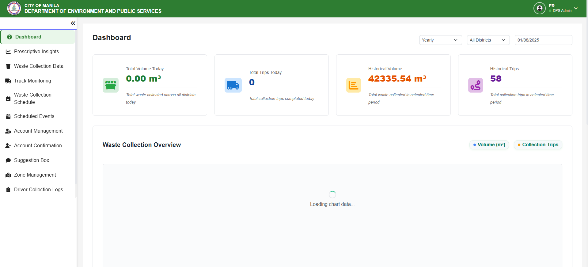
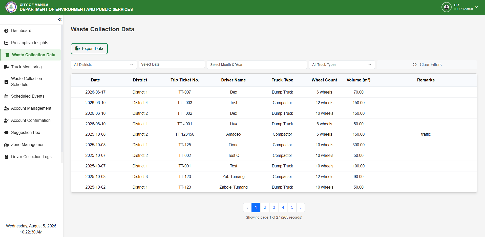
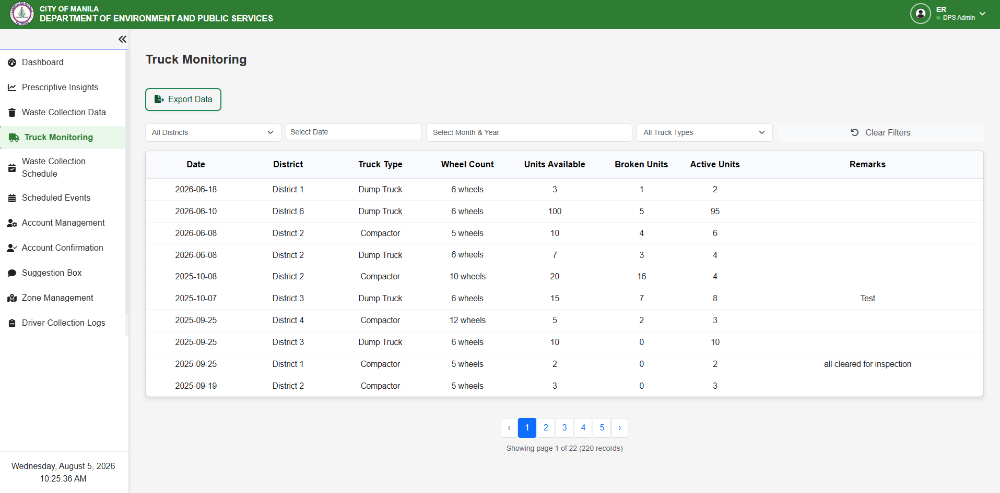

01
Waste Disposal Management System
Lead QA Tester & Project Manager
FlutterReactNode.jsMongoDBFirebase
- Created test cases and performed functional testing
- Conducted regression and integration testing
- Reported bugs to developers and verified fixes
- Helped manage project timelines using Agile methodology
Result: Successfully tested and delivered a waste management system for Manila City.


